Geometrische Abfragen
Anders als die konventionellen Auskunfts- und Suchmöglichkeiten bezüglich der Thematik einer Relation geometrischen Selektionskriterien von zentraler Bedeutung in einem GI-System. Geometrische Abfragen messen wie Fläche oder Perimeter eines Objektes bzw. die Distanz oder Richtung zwischen zwei Objekten ist. Bei der Erörterung geometrischer Abfragen müssen die Raster- und Vektordatenmodell aufgrund ihres völlig unterschiedlichen Raumkonzepts getrennt betrachtet werden. Im Sinne einer Relation ist die Geometrie eine weitere Eigenschaft eines Geoobjektes.
Die wichtigsten geometrischen Abfragen (Messfunktionen) sind in der Folge beschrieben:
Distanzen im Vektormodell
Für Vektordaten wird die Distanz zwischen zwei Objekten einfach nach dem Theorem von Pythagoras berechnet und entspricht dem kürzesten Abstand.
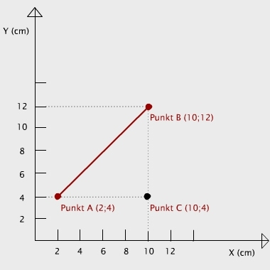 Euklidische Distanz |
Distanz zwischen den Punkten A und B 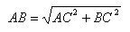 Beispiel: Die Distanz beträgt 11,3 cm. |
Rastermodell
Im Rastermodell können drei verschiedene Ansätze zur
Messung von Distanzen zwischen Punkten angewandt werden.
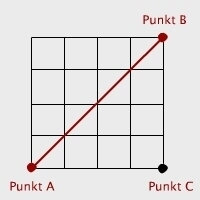 Euklidische Distanz |
Gerade Linie zwischen Punkt A und Punkt B Beispiel: Mit einer Auflösung von 2 cm beträgt die Distanz 11,3 cm. |
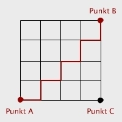 Manhattan Distance |
Distanz entlang dem Zellenrand zwischen Punkt A und
Punkt B Beispiel: Mit einer Auflösung von 2 cm beträgt die Distanz 16 cm. |
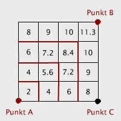 Nachbarschaft |
Konzentrische, gleich entfernte Zonen werden um den
Punkt A gesetzt. Beispiel: Mit einer Auflösung von 2 cm beträgt die Distanz 11,3 cm. |
Ausdehnung Vektormodell
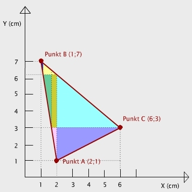 |
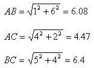 PERIMETER Summe der Länge aller Streckenabschnitte. FLÄCHE Summe der Flächen der einfachen geometrischen Formen, in die das Hauptobjekt zerlegt werden kann. |
Rastermodell
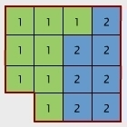 |
PERIMETER Anzahl der Zellenkanten, welche das Objekt abgrenzen, multipliziert mit der Auflösung der Zellen. Beispiel: Mit einer Auflösung von 2 cm beträgt der Perimeter 32 cm. FLÄCHE Anzahl Zellen, welche das Objekt bilden, multipliziert mit der Fläche einer Zelle. Beispiel: Mit einer Auflösung von 2 cm wird das Flächenergebnis 60 cm2. |
Distanzzonen: Distanzpuffer und Distanztransformation
Neben der Ermittlung von (kürzesten) Distanzen zwischen Objekten ist eine weitere wichtige Anwendung in einem GIS das Festlegen von Distanzzonen. Mit dieser Funktion wird jeder Raumstelle ein Distanzwert zum entsprechend nächsten Bezugsobjekt zugewiesen. Die Bildung von Distanzzonen ist für Vektor- und Rastermodell in der Lösung sowie in der Verwendung verschieden.
Vektormodell
Vektormodelle werden meist zur Modellierung von randscharfen Phänomenen verwendet. Distanzzonen im Vektormodell ergeben wiederum klare, randscharfe Polygone. Es wird deshalb der Begriff Distanzpuffer (engl. buffer) anstelle des allgemeineren Begriffs Distanzzone verwendet. Die Berechnung eines solchen Distanzpuffers ergibt als Resultat immer eine Fläche (d. h. ein Polygon), egal, ob von Punkten, Linien oder Flächen ausgegangen wird. Gesucht ist die Umrißlinie (Grenzlinie) dieser resultierenden Fläche, die in einem definierten Abstand das Ausgangsobjekt umrandet (vgl. untenstehende Animation). Der Berechnung von Distanzpuffern liegt eine euklidische Metrik zugrunde. Weitergehende Möglichkeiten, wie sie im Rastermodell einfach realisiert werden können, sind nur aufwendig erreichbar. So können ineinander geschachtelte Distanzzonen (z. B. 0–500 m, 501–1000 m, 1001–2000 m) nur durch wiederholte Berechnung und anschliessendes Verschneiden der Puffer als Polygone (engl. polygon overlay) realisiert werden. Die Möglichkeiten der Pufferbildung im Vektormodell sind beschränkter als beim Rastermodell. Dennoch gibt es einige Möglichkeiten, Distanzpuffer zu variieren (Animation unten):
- Die Form eines Puffers kann variiert werden. So kann z. B. das Ende von Puffern um Linien entweder flach oder rund sein.
- Pufferdistanzen können abhängig von einem Attributwert der Ausgangsobjekte berechnet werden. Beispielsweise bestimmt die Sendeleistung von Mobilfunkantennen ihre Reichweite.
- Puffer können auch nur einseitig gebildet werden, z. B. Bauverbotszone um einen See.
Rastermodell
Die Bildung von Distanzzonen im Rastermodell weist jeder einzelnen Rasterzelle einen Distanzwert entsprechend ihrer Distanz zur nächstgelegenen „Quellenzelle“ zu. Dadurch ergibt sich ein quasi-kontinuierliches Resultat. Da der Raum also entsprechend der Distanz zu bestimmten Objekten transformiert wird, kann im Rastermodell von einer Distanztransformation gesprochen werden: Im Rastermodell kann für die Distanztransformation eine geeignete Metrik gewählt werden: euklidische Metrik, Manhattan-Metrik oder eine Metrik, die zusätzlich zur Manhattan-Metrik (4er-Nachbarschaft der Rasterzellen) auch die diagonalen Nachbarn (8er-Nachbarschaft) einbezieht. Zusätzlich können auch Wegkosten oder Wegzeiten als Kostenoberflächen berücksichtigt werden. Kostenoberflächen enthalten Informationen über den pro Zelle variierenden Aufwand, der geleistet werden muss, um eine Distanz zurückzulegen. Eine quasi-kontinuierliche Raster-Distanztransformation kann man elegant durch eine einfache Einordnung in klassierte Distanzzonen umformen (z. B. Distanzzonen bis 250m, bis 500m usw.). Die Genauigkeit des Resultats richtet sich allerdings direkt nach der Auflösung (Maschenweite) des Rasters.
| Vektormodell | Rastermodell | |
|---|---|---|
| Bezeichnung | Distanzpuffer | Distanztransformation |
| Metrik | euklidische Metrik liegt der Berechnung zugrunde | verschiedene Metriken sind möglich |
| Modellierung | randscharfe und klare definierbare Phänomene | Phänomene, die eher kontinuierlich über den Raum variieren |
| Distanzzonen | Verschneidung der Distanzpuffer mit polygon overlay. Zusätzliche
Variationen:
|
Klassierung der Distanztransformation (reclassify) |
| variable Kosten | unmöglich | Einbezug von Kostenoberfläche als Aufwand der Distanzüberwindung möglich |
| Genauigkeit | abhängig von der Datengenauigkeit und Rechenpräzision | von der Auflösung des Rasters abhängig |
Erstellen eines Distanzpuffers im Vektormodell
Die konkrete Lösung für einen Distanzpuffer um eine Linie oder um Polygone besteht nicht einfach in der Bildung paralleler Linien im Abstand l vom Ausgangsobjekt, sondern benötigt in den Stützpunkten zusätzlich Kreisbögen mit dem Radius l. Die Animation zeigt die Konstruktion eines Distanzpuffers um einen Linienzug.
Konstruktion eines DistanzpuffersDistanzpuffer um Punkte sind Kreisflächen. Die Punkte in der folgenden Abbildung repräsentieren Standorte von Mobilfunkantennen mit unterschiedlicher Sendeleistung. Dabei ist die äusserste Linie die maximale Reichweite bei gegebener Sendeleistung. Die Distanzpuffer sind hier mit Attributwerten der Ausgangsobjekte gewichtet. Auf der Karte wird ersichtlich, welche Teile der Siedlungsfläche mit einem Empfang abgedeckt sind und welche nicht.
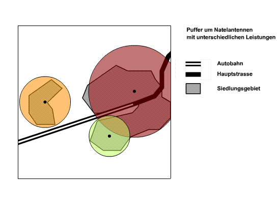
Distanzpuffer um Punkte mit AttributdatenDie nächsten beiden Beispiele beschäftigen sich mit Distanzpuffern entlang von Linien. Die Linien sind in diesem Fall Strassen unterschiedlicher Klassen. Durch die Einteilung der Strassen ist die Höchstgeschwindigkeit bekannt: Autobahnen 120 km/h und Hauptstrassen 80 km/h. Über ein Immissions-/Emissionsmodell für Strassenlärm (vgl. Lärmorama) wurden die Distanzpuffer für einen Grenzwert von 70 dB abhängig von der erlaubten Höchstgeschwindigkeit berechnet. In das Modell fliessen hauptsächlich drei Parameter ein: durchschnittliche Geschwindigkeit, durchschnittliche Anzahl Fahrzeuge pro Stunden und der Lastwagenanteil. Hindernisse usw. wurden keine berücksichtigt. Es wird davon ausgegangen, dass der Schall sich ungehindert im Raum ausbreiten kann. Die so entstandenen Flächen decken ein Gebiet ab von 85,1 dB an der Verkehrsachse und bis 70 dB an der Umrisslinie des Distanzpuffers (beziehungsweise von 82,9 dB bis 70 dB). Dies bedeutet, dass Pufferfläche nicht homogen ist bezüglich der Beschallung (Immissionswert). Häufig interessiert die Grenzlinie bzw. ein Grenzwert, der mit der Umrisslinie der Pufferfläche markiert ist. Interessant ist diese Fläche aber, wenn z. B. herausgefunden werden möchte, wie groß die Fläche (bzw. Anzahl Einwohner) des Siedlungsgebiets ist, die einem Lärm von 85,1 dB bis 70 dB ausgesetzt ist.
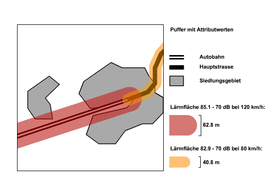
Distanzpuffer um einen LinienzugMöchte man eine Abstufung bzw. Verschachtelung der Immissionswerte darstellen, müssen mehrere Distanzpuffer mit den jeweiligen Immissionswerten berechnet werden. Damit die Flächen nicht immer bei 85,1 dB beginnen, müssen sie miteinander verschnitten werden (engl. polygon overlay). Wie Flächen bzw. Polygone verschnitten werden, wird in der Lektion Eignungsanalyse besprochen.
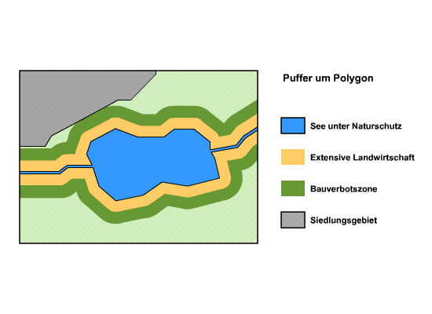
Einseitiger Distanzpuffer um FlächeDas letzte Beispiel zeigt einseitige Distanzpuffer, die aufgrund eines Gesetzes festlegt wurden, das bestimmt welche Abstände um ein Naturschutzgebiet für extensive Landwirtschaft (schonender Umgang mit der Natur) und einem allgemeinem Bauverbot gelten.
Distanzpuffer um einen Linienzug mit Polygon overlayErstellen eines Distanzpuffers im Rastermodell
In der Startabbildung der folgenden Animation sind Tramhaltestellen mit dem Zellenwert 7 dargestellt. Ausgehend von diesen beiden „Quellenzellen“ wird nun für jede einzelne Zelle des Rasters die Distanz zur nächstgelegenen Ausgangszelle berechnet. Am Schluss resultiert ein Raster, das aus Distanzen besteht. Die ursprünglichen Haltestellen erhalten somit die Distanz 0. Bei der dargestellten Distanztransformation liegt eine euklidische Metrik zugrunde. Die Werte können in der Animation zu Klassen zusammengefasst werden (engl. reclassify). Ein solcher distanztransformierter Raster könnte beispielsweise als Grundlage dienen, um die von der Distanz abhängigen Immissionswerte des Lärmmodells zuzuweisen. Damit würde eine quasi-kontinuierliche Oberfläche mit Lärmwerten entstehen. Die Genauigkeit und die Kontinuität des Lärmrasters sind nur von der Auflösung des Rasters abhängig. Lärmzonen könnten einfach mit einer neuen Klassierung der Immissionswerte erreicht werden.
Distanz-Berechnung und Umkodierung (reclassification)In einem Rastermodell ist es auch möglich, eine Distanztransformation für Flächen oder eine beliebige Anordnung von Quellenzellen durchzuführen. Bei der hier dargestellten Zone handelt es sich um Rasterzellen gleicher Thematik, die einen Wald, codiert mit dem Wert 99, darstellen. Für jede Rasterzelle kann man nun den kürzesten Abstand zum Waldrand (gemäss der gewählten Metrik) ermitteln. Die Ergebnisse werden in einem neuen Raster eingetragen. In diesem Raster entsprechen die Werte dem Abstand vom Waldrand. Am Rand des Waldes werden die Werte kleiner sein und werden gegen das Innere des Waldes hoch sein. In unserem Beispiel wurde eine Manhattan-Metrik gewählt. Gemäss dieser Metrik, bei der nur die direkten Nachbarn einer Zelle (4er-Nachbarschaft) berücksichtigt werden, wird diese Region schrittweise jeweils um eine Zellenbreite verdünnt, bis keine Zellen mehr übrig sind. Jeder Verdünnungsschritt wird am Schluss zu einem gemeinsamen Rasterbild addiert. Wie verschiedene Raster kombiniert werden, zeigt die Lektion Eignungsanalyse.
Distanztransformation einer WaldflächeIn der Startabbildung der folgenden Animation sind Tramhaltestellen mit dem Zellenwert 7 dargestellt. Ausgehend von diesen beiden "Quellenzellen" wird nun für jede einzelne Zelle des Rasters die Distanz zur nächstgelegenen Ausgangszelle berechnet. Am Schluss resultiert ein Raster, das aus Distanzen besteht. Die ursprünglichen Haltestellen erhalten somit die Distanz 0. Bei der dargestellten Distanztransformation liegt eine euklidische Metrik zugrunde. Die Werte können in der Animation zu Klassen zusammengefasst werden (engl. reclassify). Ein solcher distanztransformierter Raster könnte beispielsweise als Grundlage dienen, um die von der Distanz abhängigen Immissionswerte des Lärmmodells zuzuweisen. Damit würde eine quasi-kontinuierliche Oberfläche mit Lärmwerten entstehen. Die Genauigkeit und die Kontinuität des Lärmrasters ist nur von der Auflösung des Rasters abhängig. Lärmzonen könnten einfach mit einer neuen Klassierung der Immissionswerte erreicht werden.
Distanz-Berechnung und Umkodierung (reclassification)In einem Rastermodell ist es auch möglich, eine Distanztransformation für Flächen oder eine beliebige Anordnung von Quellenzellen durchzuführen. Bei der hier dargestellten Zone handelt es sich um Rasterzellen gleicher Thematik, die einen Wald, codiert mit dem Wert 99, darstellen. Für jede Rasterzelle kann man nun den kürzesten Abstand zum Waldrand (gemäss der gewählten Metrik) ermitteln. Die Ergebnisse werden in einem neuen Raster eingetragen. In diesem Raster entsprechen die Werte dem Abstand vom Waldrand. Am Rand des Waldes werden die Werte kleiner sein und werden gegen das Innere des Waldes hoch sein. In unserem Beispiel wurde eine Manhattan-Metrik gewählt. Gemäss dieser Metrik, bei der nur die direkten Nachbarn einer Zelle (4er-Nachbarschaft) berücksichtigt werden, wird diese Region schrittweise jeweils um eine Zellenbreite verdünnt, bis keine Zellen mehr übrig sind. Jeder Verdünnungsschritt wird am Schluss zu einem gemeinsamen Rasterbild addiert. Wie verschiedene Raster kombiniert werden, zeigt die Lektion Eignungsanalyse.
Distanztransformation einer WaldflächeWeitere Beispiele für die Verwendung von Proximity
Beschirmung einiger Bäume
| Vektormodell | 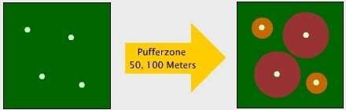 (GITTA 2005) |
| Rastermodell | 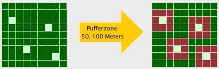 (GITTA 2005) |
Berechnung einer Überschwemmungsfläche
| Vektormodell | 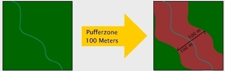 (GITTA 2005) |
| Rastermodell | 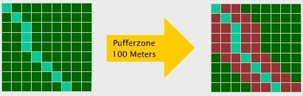 (GITTA 2005) |
Gefährdungszone durch eine Lawine
| Vektormodell | 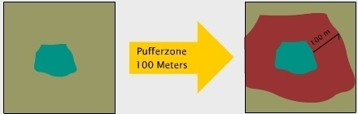 (GITTA 2005) |
| Rastermodell | 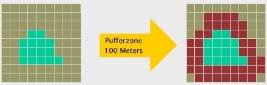 (GITTA 2005) |
Bearbeiten Sie...
- Was ist zur Berechnung der Euklidischen Distanz in einem Rasterdatensatz zwingend notwendig? (mehrere Möglichkeiten)
- Welches Datenmodell ist für geometrische Abfragen Ihrer Meinung nach geeigneter? Berücksichtigen Sie bitte auch die Dimensionalität bei Ihrer Antwort.